Documentation¶
-
class
kymatio.Scattering1D(J, shape, Q, normalize='l1', criterion_amplitude=0.001, r_psi=0.7071067811865476, sigma0=0.1, alpha=5.0, P_max=5, eps=1e-07, max_order=2, average=True, oversampling=0, vectorize=True)[source]¶ Bases:
objectThe 1D scattering transform
The scattering transform computes a cascade of wavelet transforms alternated with a complex modulus non-linearity. The scattering transform of a 1D signal 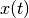 may be written as
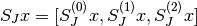where
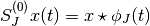,
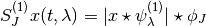, and
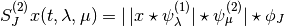.
In the above formulas, 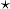 denotes convolution in time. The filters 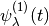 and 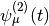 are analytic wavelets with center frequencies
 and
and
 , while 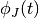 is a real lowpass filter centered
at the zero frequency.
, while 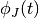 is a real lowpass filter centered
at the zero frequency.The Scattering1D class implements the 1D scattering transform for a given set of filters whose parameters are specified at initialization. While the wavelets are fixed, other parameters may be changed after the object is created, such as whether to compute all of 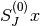, 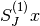, and 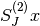 or just and .
The scattering transform may be computed on the CPU (the default) or a GPU, if available. A Scattering1D object may be transferred from one to the other using the cuda() and cpu() methods.
Given an input Tensor x of size (B, T), where B is the number of signals to transform (the batch size) and T is the length of the signal, we compute its scattering transform by passing it to the forward() method.
Example
# Set the parameters of the scattering transform. J = 6 T = 2**13 Q = 8 # Generate a sample signal. x = torch.randn(1, 1, T) # Define a Scattering1D object. S = Scattering1D(J, T, Q) # Calculate the scattering transform. Sx = S.forward(x)
Above, the length of the signal is T = 2**13 = 8192, while the maximum scale of the scattering transform is set to 2**J = 2**6 = 64. The time-frequency resolution of the first-order wavelets is set to Q = 8 wavelets per octave. The second-order wavelets always have one wavelet per octave.
Parameters: - J (int) – The maximum log-scale of the scattering transform. In other words, the maximum scale is given by 2**J.
- T (int) – The length of the input signals.
- Q (int >= 1) – The number of first-order wavelets per octave (second-order wavelets are fixed to one wavelet per octave).
- normalize (string, optional) – Normalization of the wavelets: ‘l1’, corresponding to 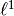-normalization, or ‘l2’, corresponding to 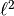-normalization. Defaults to ‘l1’.
- criterion_amplitude (float, optional) – Controls the padding size (the larger this value, the smaller the padding size). Measures the amount of the Gaussian mass (in the norm) which can be ignored after padding. Defaults to 1e-3.
- r_psi (float, optional) – Controls the redundancy of the filters (the larger this value, the larger the overlap between adjacent wavelets). Must be between zero and one. Defaults to math.sqrt(0.5).
- sigma0 (float, optional) – Controls the frequency bandwidth of the lowpass filter , which is given by sigma0/2**J. Defaults to 1e-1.
- alpha (float, optional) – Aliasing tolerance after subsampling. The larger this value, the more conservative the subsampling during the transform. Defaults to 5.
- P_max (int > 1, optional) – Maximum number of periods to use to ensure that the Fourier transform of the filters is periodic. Defaults to 5.
- eps (float, optional) – Required precision for the periodization. Defaults to 1e-7.
- max_order (int, optional) – The maximum order of scattering coefficients to compute. Must be either 1 or 2. Defaults to 2.
- average (boolean, optional) – Determines whether the output is averaged in time or not. The averaged output corresponds to the standard scattering transform, while the un-averaged output skips the last convolution by . This parameter may be modified after object creation. Defaults to True.
- oversampling (integer >= 0, optional) – Controls the oversampling factor relative to the default as a power of two. Since the convolving by wavelets (or lowpass filters) and taking the modulus reduces the high-frequency content of the signal, we can subsample to save space and improve performance. However, this may reduce precision in the calculation. If this is not desirable, oversampling can be set to a large value to prevent too much subsampling. This parameter may be modified after object creation. Defaults to 0.
- vectorize (boolean, optional) – Determines wheter to return a vectorized scattering transform (that is, a large array containing the output) or a dictionary (where each entry corresponds to a separate scattering coefficient). This parameter may be modified after object creation. Defaults to True.
-
J¶ The maximum log-scale of the scattering transform. In other words, the maximum scale is given by 2**J.
Type: int
-
shape¶ The length of the input signals.
Type: int
-
Q¶ The number of first-order wavelets per octave (second-order wavelets are fixed to one wavelet per octave).
Type: int
-
J_pad¶ The logarithm of the padded length of the signals.
Type: int
-
pad_left¶ The amount of padding to the left of the signal.
Type: int
-
pad_right¶ The amount of padding to the right of the signal.
Type: int
-
phi_f¶ A dictionary containing the lowpass filter at all resolutions. See filter_bank.scattering_filter_factory for an exact description.
Type: dictionary
-
psi1_f¶ A dictionary containing all the first-order wavelet filters, each represented as a dictionary containing that filter at all resolutions. See filter_bank.scattering_filter_factory for an exact description.
Type: dictionary
-
psi2_f¶ A dictionary containing all the second-order wavelet filters, each represented as a dictionary containing that filter at all resolutions. See filter_bank.scattering_filter_factory for an exact description. description
Type: dictionary
-
max_order¶ The maximum scattering order of the transform.
Type: int
-
average¶ Controls whether the output should be averaged (the standard scattering transform) or not (resulting in wavelet modulus coefficients). Note that to obtain unaveraged output, the vectorize flag must be set to False.
Type: boolean
-
oversampling¶ The number of powers of two to oversample the output compared to the default subsampling rate determined from the filters.
Type: int
-
vectorize¶ Controls whether the output should be vectorized into a single Tensor or collected into a dictionary. For more details, see the documentation for forward().
Type: boolean
-
build()[source]¶ Set up padding and filters
Certain internal data, such as the amount of padding and the wavelet filters to be used in the scattering transform, need to be computed from the parameters given during construction. This function is called automatically during object creation and no subsequent calls are therefore needed.
-
static
compute_meta_scattering(J, Q, max_order=2)[source]¶ Get metadata on the transform.
This information specifies the content of each scattering coefficient, which order, which frequencies, which filters were used, and so on.
Parameters: - J (int) – The maximum log-scale of the scattering transform. In other words, the maximum scale is given by 2**J.
- Q (int >= 1) – The number of first-order wavelets per octave. Second-order wavelets are fixed to one wavelet per octave.
- max_order (int, optional) – The maximum order of scattering coefficients to compute. Must be either equal to 1 or 2. Defaults to 2.
Returns: meta – A dictionary with the following keys:
- ’order’ : tensor
- A Tensor of length C, the total number of scattering coefficients, specifying the scattering order.
- ’xi’ : tensor
- A Tensor of size (C, max_order), specifying the center frequency of the filter used at each order (padded with NaNs).
- ’sigma’ : tensor
- A Tensor of size (C, max_order), specifying the frequency bandwidth of the filter used at each order (padded with NaNs).
- ’j’ : tensor
- A Tensor of size (C, max_order), specifying the dyadic scale of the filter used at each order (padded with NaNs).
- ’n’ : tensor
- A Tensor of size (C, max_order), specifying the indices of the filters used at each order (padded with NaNs).
- ’key’ : list
- The tuples indexing the corresponding scattering coefficient in the non-vectorized output.
Return type: dictionary
-
forward(x)[source]¶ Apply the scattering transform
Given an input Tensor of size (B, T0), where B is the batch size and T0 is the length of the individual signals, this function computes its scattering transform. If the vectorize flag is set to True, the output is in the form of a Tensor or size (B, C, T1), where T1 is the signal length after subsampling to the scale 2**J (with the appropriate oversampling factor to reduce aliasing), and C is the number of scattering coefficients. If vectorize is set False, however, the output is a dictionary containing C keys, each a tuple whose length corresponds to the scattering order and whose elements are the sequence of filter indices used.
Furthermore, if the average flag is set to False, these outputs are not averaged, but are simply the wavelet modulus coefficients of the filters.
Parameters: x (tensor) – An input Tensor of size (B, T0). Returns: S – If the vectorize flag is True, the output is a Tensor containing the scattering coefficients, while if vectorize is False, it is a dictionary indexed by tuples of filter indices. Return type: tensor or dictionary
-
meta()[source]¶ Get meta information on the transform
Calls the static method compute_meta_scattering() with the parameters of the transform object.
Returns: meta – See the documentation for compute_meta_scattering(). Return type: dictionary
-
output_size(detail=False)[source]¶ Get size of the scattering transform
Calls the static method precompute_size_scattering() with the parameters of the transform object.
Parameters: detail (boolean, optional) – Specifies whether to provide a detailed size (number of coefficient per order) or an aggregate size (total number of coefficients). Returns: size – See the documentation for precompute_size_scattering(). Return type: int or tuple
-
static
precompute_size_scattering(J, Q, max_order=2, detail=False)[source]¶ Get size of the scattering transform
The number of scattering coefficients depends on the filter configuration and so can be calculated using a few of the scattering transform parameters.
Parameters: - J (int) – The maximum log-scale of the scattering transform. In other words, the maximum scale is given by 2**J.
- Q (int >= 1) – The number of first-order wavelets per octave. Second-order wavelets are fixed to one wavelet per octave.
- max_order (int, optional) – The maximum order of scattering coefficients to compute. Must be either equal to 1 or 2. Defaults to 2.
- detail (boolean, optional) – Specifies whether to provide a detailed size (number of coefficient per order) or an aggregate size (total number of coefficients).
Returns: size – If detail is False, returns the number of coefficients as an integer. If True, returns a tuple of size max_order containing the number of coefficients in each order.
Return type: int or tuple
-
class
kymatio.Scattering2D(J, shape, L=8, max_order=2, pre_pad=False)[source]¶ Bases:
objectMain module implementing the scattering transform in 2D. The scattering transform computes two wavelet transform followed by modulus non-linearity. It can be summarized as:
S_J x = [S_J^0 x, S_J^1 x, S_J^2 x]
where:
S_J^0 x = x * phi_J S_J^1 x = [|x * psi^1_lambda| * phi_J]_lambda S_J^2 x = [||x * psi^1_lambda| * psi^2_mu| * phi_J]_{lambda, mu}
where * denotes the convolution (in space), phi_J is a low pass filter, psi^1_lambda is a family of band pass filters and psi^2_mu is another family of band pass filters. Only Morlet filters are used in this implementation. Convolutions are efficiently performed in the Fourier domain with this implementation.
Example
# 1) Define a Scattering object as: s = Scattering2D(J, M, N) # where (M, N) are the image sizes and 2**J the scale of the scattering # 2) Forward on an input Variable x of shape B x 1 x M x N, # where B is the batch size. result_s = s(x)
Parameters: - J (int) – logscale of the scattering
- shape (tuple of int) – spatial support (M, N) of the input
- L (int, optional) – number of angles used for the wavelet transform
- max_order (int, optional) – The maximum order of scattering coefficients to compute. Must be either 1 or 2. Defaults to 2.
- pre_pad (boolean, optional) – controls the padding: if set to False, a symmetric padding is applied on the signal. If set to true, the software will assume the signal was padded externally.
-
J¶ logscale of the scattering
Type: int
-
shape¶ spatial support (M, N) of the input
Type: tuple of int
-
L¶ number of angles used for the wavelet transform
Type: int, optional
-
max_order¶ The maximum order of scattering coefficients to compute. Must be either equal to 1 or 2. Defaults to 2.
Type: int, optional
-
pre_pad¶ controls the padding
Type: boolean
-
Psi¶ containing the wavelets filters at all resolutions. See filter_bank.filter_bank for an exact description.
Type: dictionary
-
Phi¶ containing the low-pass filters at all resolutions. See filter_bank.filter_bank for an exact description.
Type: dictionary
-
M_padded, N_padded spatial support of the padded input
Type: int
Notes
The design of the filters is optimized for the value L = 8
- pre_pad is particularly useful when doing crops of a bigger
- image because the padding is then extremely accurate. Defaults to False.
-
forward(input)[source]¶ Forward pass of the scattering.
Parameters: input (tensor) – tensor with 3 dimensions 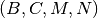 where 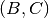 are arbitrary.  typically is the batch size, whereas
typically is the batch size, whereas  is the number of input channels.
is the number of input channels.Returns: S – scattering of the input, a 4D tensor 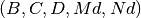 where  corresponds
to a new channel dimension and 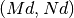 are downsampled sizes by a factor 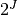.
corresponds
to a new channel dimension and 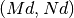 are downsampled sizes by a factor 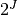.Return type: tensor
-
class
kymatio.Scattering3D(J, shape, L, sigma_0)[source]¶ Bases:
object3D Solid Harmonic scattering .
This class implements solid harmonic scattering on an input 3D image. For details see https://arxiv.org/abs/1805.00571.
Instantiates and initializes a 3d solid harmonic scattering object.
Parameters: - J (int) – number of scales
- shape (tuple of int) – shape (M, N, O) of the input signal
- L (int) – number of l values
-
forward(input_array, order_2=True, rotation_covariant=True, method='standard', points=None, integral_powers=(0.5, 1.0, 2.0))[source]¶ The forward pass of 3D solid harmonic scattering
Parameters: - input_array (torch tensor) – input of size (batchsize, M, N, O)
- order_2 (bool, optional) – if set to False|True it also excludes|includes second order scattering coefficients (default: True).
- rotation_covariant (bool, optional) –
if set to True the first order moduli take the form:
:math:`\sqrt(\sum_m (input_array \star \psi_{j,l,m})^2))` if set to False the first order moduli take the form:: :math:`input_array \star \psi_{j,l,m})` The second order moduli change analogously Defaut: True - method (string, optional) – specifies the method for obtaining scattering coefficients (“standard”,”local”,”integral”). Default: “standard”
- points (array-like, optional) – List of locations in which to sample wavelet moduli. Used when method == ‘local’
- integral_powers (array-like) – List of exponents to the power of which moduli are raised before integration. Used with method == ‘standard’, method == ‘integral’
Returns: output – if order_2 is false it returns a torch tensor with the first order scattering coefficients if order_2 is true it returns a tuple with two elements, the first and second order scattering coefficients
Return type: tuple | torch tensor